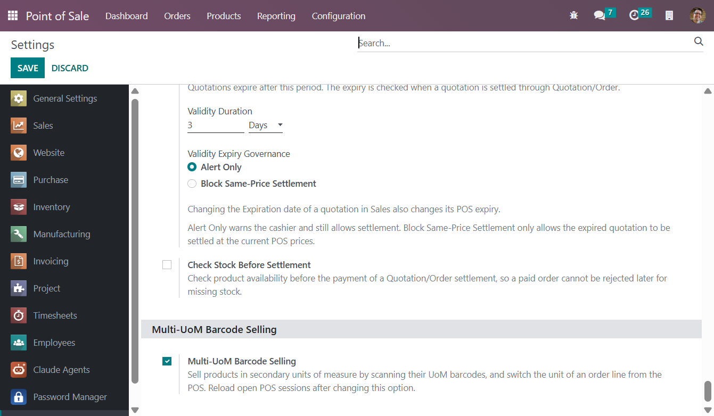
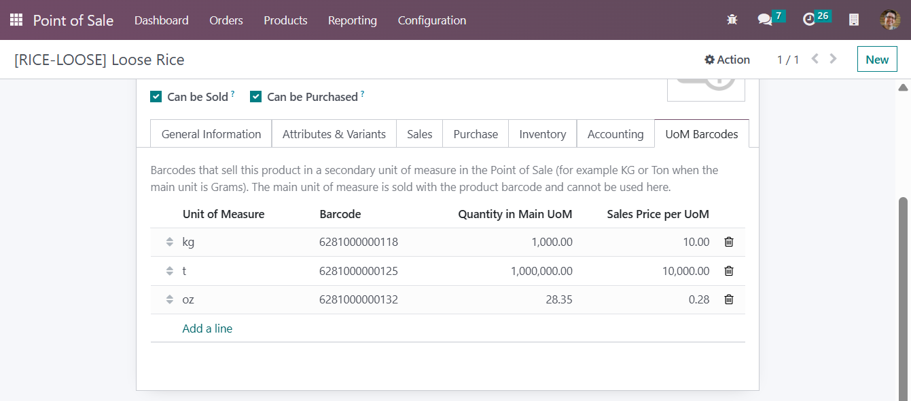
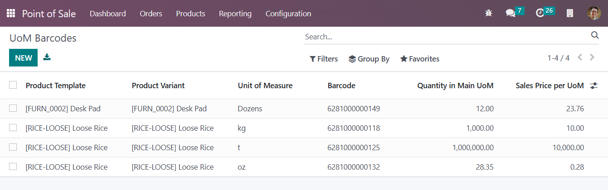
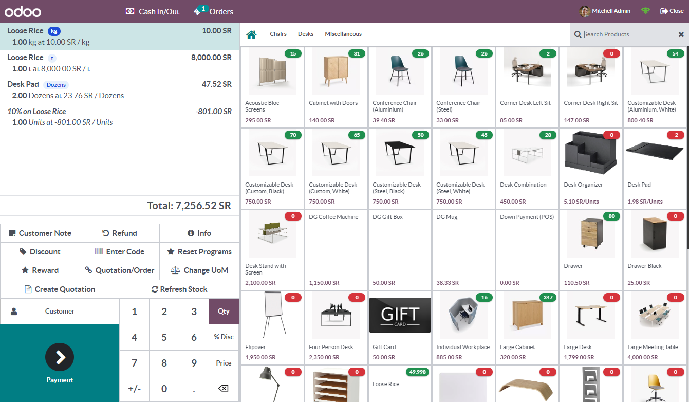
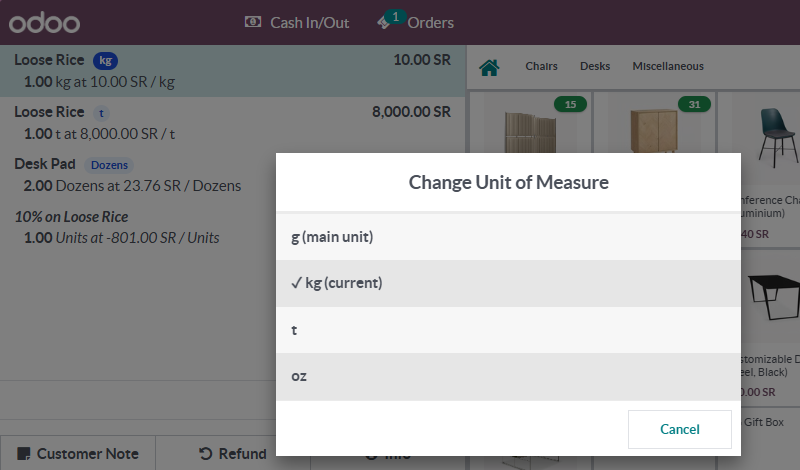
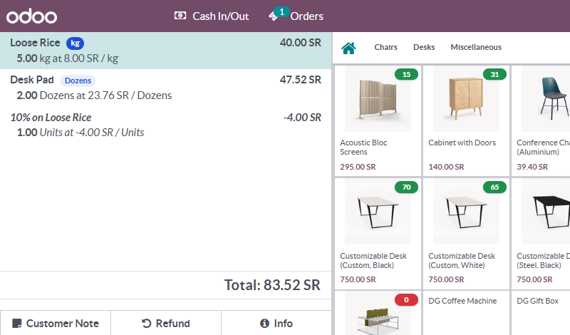
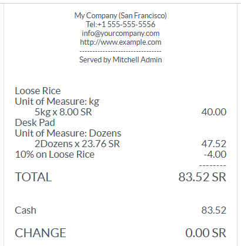
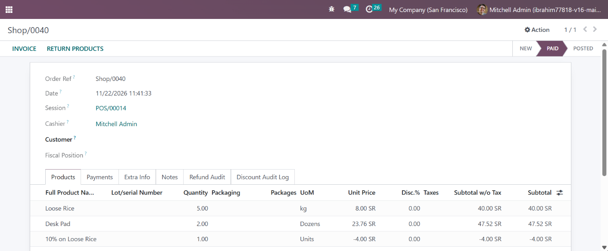
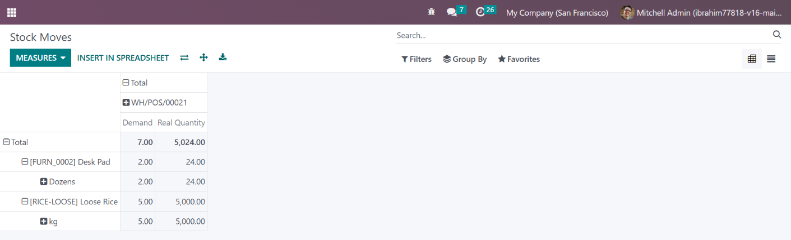
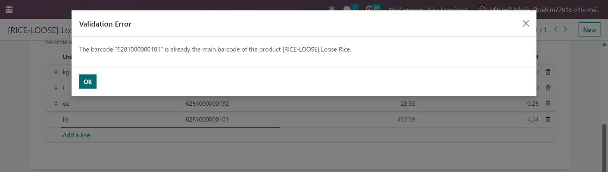

Sell the same product by the gram, the kilo or the ton, or by the unit and the dozen, straight from the cashier’s scanner. Each unit gets its own barcode and its converted, pricelist-aware price. The unit then follows the sale to the receipt, the backend order and the stock moves.
Shops that sell loose goods, building materials or wholesale packs need one product in several units at the counter, without creating a product per unit.
Four steps from setup to stock.
Screenshots use demo data: Loose Rice stocked in grams at 0.01 SR per g, with barcodes for kg, ton and oz; Desk Pad stocked in Units at 1.98 SR, with a Dozens barcode; a price tier of 20% off from 5,000 g; and a promotion of 10% off rice from 500 g.
Under Point of Sale › Configuration › Settings, choose the POS and tick Multi-UoM Barcode Selling. If the option is off, UoM barcodes are not loaded and the Change UoM button is hidden. Orders that already contain kg or Dozens lines keep their unit.

The UoM Barcodes tab lists a Unit of Measure and a Barcode per line, with the Quantity in Main UoM and the Sales Price per UoM calculated for you. Only units from the main unit’s category can be picked, and the main unit itself is excluded. For products with variants, a Product Variant column appears.


Scanning a UoM barcode adds the product with quantity 1 in that unit, shown with a unit badge on the order line. The price comes from the main-unit price and the unit conversion. Scanning the same unit again adds to the same line when the unit groups in POS (for example Dozens).

Select a line and press Change UoM. The popup lists the main unit and every unit that has a UoM barcode, with the current one marked ✓ (current). The quantity number is kept and the price is recalculated in the new unit. A price set by hand is converted proportionally. Reward lines and refund lines keep their unit.

Pricelist minimum quantities and loyalty/promotion rule quantities are compared in the product’s main unit, so 5 kg reaches the “from 5,000 g” price tier (8.00 per kg) and the “minimum 500 g” rice promotion, and 18 oz (510 g) would reach that promotion too. Amount-based rules use the real line totals. Changing the order pricelist recalculates unit lines.

| Line | In main unit | Rule “minimum 500 g” |
|---|---|---|
| 17 oz Loose Rice | 482 g | Not reached |
| 18 oz Loose Rice | 510 g | Reached |
| 1 kg Loose Rice | 1,000 g | Reached |
Each line sold in a secondary unit shows a unit badge next to the product name, plus the quantity and unit price in that unit, on screen and on the printed receipt. The customer sees exactly what was weighed or counted.

The Product UoM of each POS order line is stored, and invoices created from the order use it. Stock moves are grouped per product and unit, so each stock move and move line carries the unit sold. Stock converts the quantity to the main unit: in the delivery of the order below, 5 kg = 5,000 g and 2 Dozens = 24 Units. Margins use the cost per main unit.


UoM barcodes are unique at database level and checked against product barcodes and packaging barcodes in both directions. The unit must be in the main unit’s category, can’t be the main unit, and only POS products accept UoM barcodes. These checks apply to the screen, imports and the API, and the error messages are in English and Arabic.

What happens in the situations that usually break unit selling.
Standard Odoo groups, no new group to manage.
| Who | UoM barcodes |
|---|---|
| Internal users | Read (so product forms open for everyone) |
| Point of Sale / User | Read (loaded into the POS session) |
| Point of Sale / Administrator | Create, edit, delete; UoM Barcodes menu |
| Inventory / Administrator | Create, edit, delete |
| Multi-company | Record rule: barcodes of the product’s company, or shared products |
| Odoo version | 17.0, Community and Enterprise |
| Depends on | point_of_sale, pos_loyalty |
| Menus | Point of Sale › Products › UoM Barcodes; product form › UoM Barcodes tab |
| Settings | Point of Sale › Configuration › Settings › Multi-UoM Barcode Selling |
| Models | New product.uom.barcode; extends pos.config, pos.session, pos.order, pos.order.line (stored product_uom_id), product.template, product.product, product.packaging, stock.picking |
| POS performance | UoM barcodes loaded once and indexed in PosStore._processData(). Scans and unit changes run in memory. |
| Automated tests | 24 tests: configuration defaults, barcode uniqueness and main-unit exclusion, POS-only products, scan conversion, pricelist tiers, unit switching, invoice lines, stock moves and move lines, refunds, cost in main unit, loyalty reward lines |
| Languages | English, Arabic (i18n/ar.po) |
| License | LGPL-3 |
Questions, a demo, or an adaptation to your own process? Get in touch.
✉ ibrahim.yahiah@gmail.com LinkedIn: Ibrahim YahiaAuthor: Ibrahim Yahia · License: LGPL-3